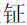

辞别了抗战心房的重庆，
走入青山绿水间的初夏初晴；
心里，五四的血花火影；
眼里，千里的山光鸟声，
走向蓉城，华西的北平；
愤怒与美景，
阴暗与光明；
有什么语言能道出，像风云未定，
这诗心的激动，忽雨忽晴？
有什么文字能道尽这爱与憎，
笑与泪交织的一片深情：
把诗人的愤怒，诅咒，苦痛，
时而霹雳，时而金

，教邪魔与恶兽们颤惊！
看，这蜜原里的蓉城，
花一样的秀静，
微雨润着梧桐！
啊，鬼手伸向天空，
把地狱的毒火撒在重庆，
血债永远，永远算不清，
再撒在古秀静雅的蓉城！
谁还有逸致闲情，
到武侯祠与薛涛井，
去瞻仰，去吟咏，
或在竹林下品一盏香茗？
心中的怒焰烧尽了恬淡的幽情！
看！繁荣的市井，
瓦砾纵横；
灰里烟中
是财产生命；
寂无人声，
血与火造成了鬼境：
微风吹布着屠杀的血腥，
焦树残垣倚着月明！
鬼手布置下这地狱的外景，
也只有魔鬼管烧杀唤作和平！
把我们的鲜血流净，
把民族的耻辱洗清，
我们死，我们牺牲，
我们不接受鬼手里的“和平”！
满腔的愤慨，疏朗的晨星，
车往北行：
绿的黄金一望千顷，
绿的微风吹送着鸡鸣；
成都以北平原的美景，
和田园里忙碌中的安静，
啊，后方的安定，
人力的无穷；
农家男女的热汗，滴滴在斗争：
无边的绿禾支持着战场的收成！
穿过田林的平静，
荡入城乡的闹声；
我们宿在绵阳，赶过梓潼。
噢，那使人难舍开的绵阳城：
路净街明，
夹道的梧桐；
顺着绿阴下的路径，
渐渐的走入花鸟的领域中；
阴晴未定，
云淡花明；
转过花圃，转过竹丛，
水浅桥横，
苔石弄着水声。
在树下，或倚着青藤，
川北伟大的公园中，
休息着来自河北或山东，
失了家乡的男女学生；
竹林里颤出来北地的歌咏，
是希望，是悲痛，
每颗鲜花似的心里抱着不平！
乡音唤起了心中的幻景，
仿佛我听见了黄河的激荡与波声！
低着头，像疲倦了的游僧，
我走回那静美的城中；
细雨，在蜀道上的旅舍孤灯
与断梦里，滴到天明！
天已明，天还未晴，
烟雨迷濛里赶过了梓潼。
行：
蜀道难行，
青山万重；
忽上忽下，似动似停；
疾转慢转，车吼心惊！
盘过山顶，
滑到谷中，
又是青峰！
悬崖悬着瘦松，
悬着生命；
擦过悬崖，看，云在涧中！
动：
云，烟，雾，雨，群峰，
都在流动。
没有南北，没有西东，
路在云中。
云移雾动，
露出山峰，
埋起山峰；
云雾之海里吞吐着绿岛青松。
近处，细雨似落似停，
山花与野草香美无声。
远处，白烟轻动，
现出，又隐起，一二青峰。
再远处，云破，一线光明，
闪出淡绿的一片山晴。
看不尽，数不清，
啊，蜀道的难行，
云里天外，千峰万峰！
山峰，随着云影，
绿色千种，
绿色千重。
路转云行，
绿影倍浓，
七曲山头万树青松；
冒着一山的松雨斜风，
去看那晋代的巨柏与文昌的古宫：
潇洒的文昌，随着幼僮，
驴背上，竹笠下，万古清明。
离了松竹钟磬的幽境，
又转过青山几重；
剑阁——谁不记得那悲剧里的铃声——
今日也正在凄凉的细雨中！
剑阁多么小的一座城，
一条小街，几盏油灯。
好像还紧记着古代的一段幽情！
只有夜雨，没有铃声；
听，我们在歌唱历史的新生！